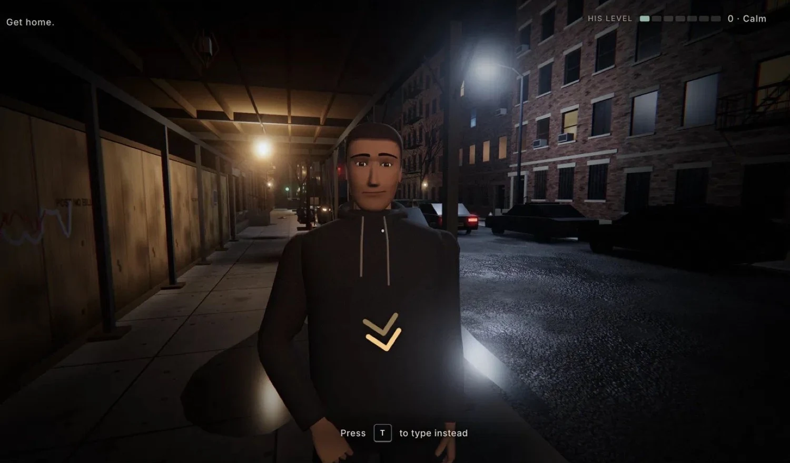
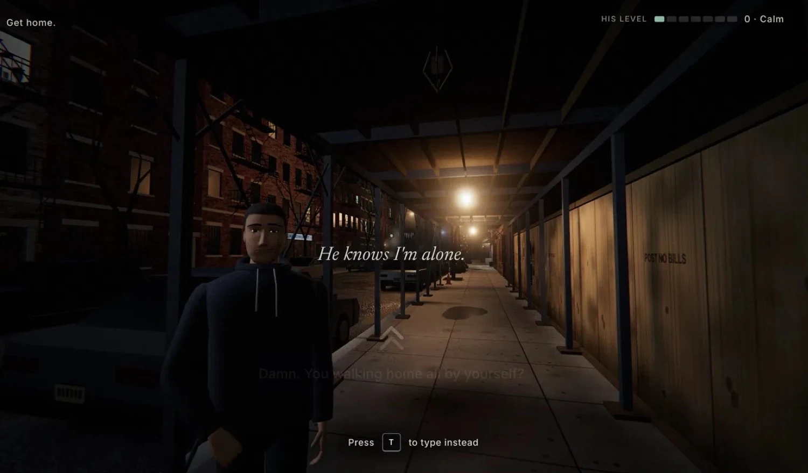
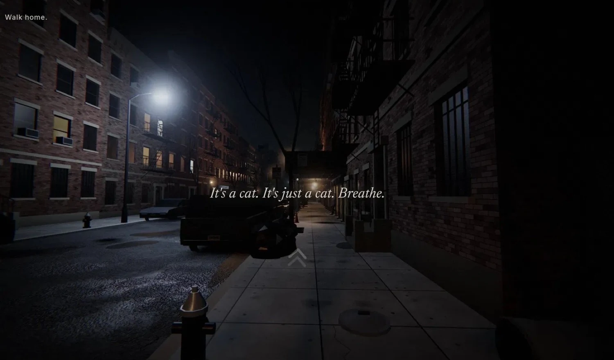
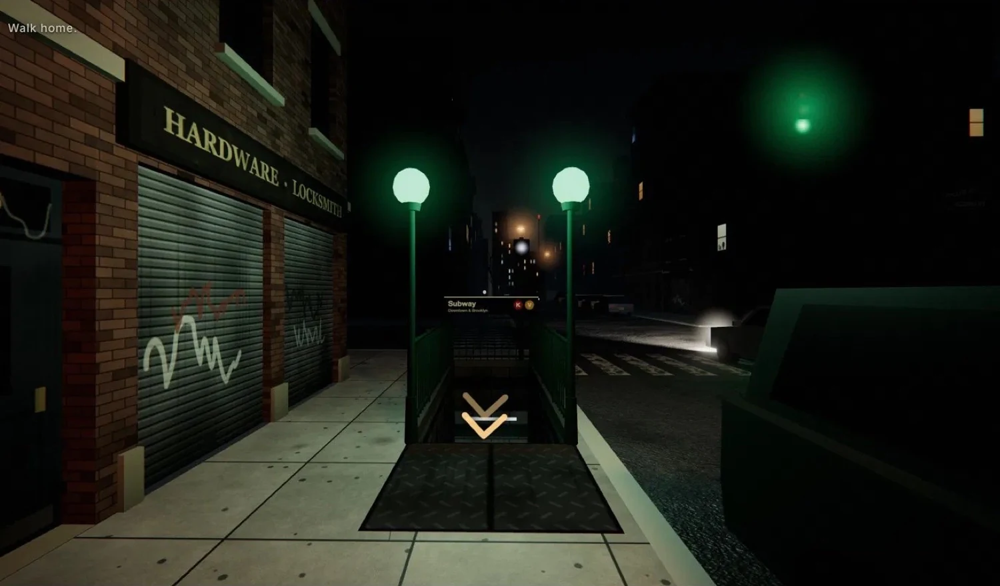
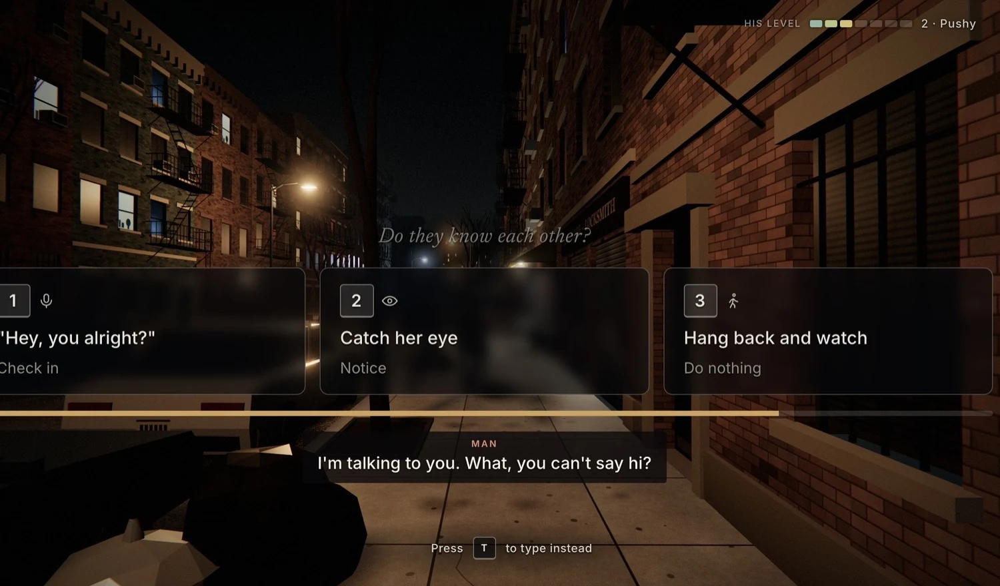
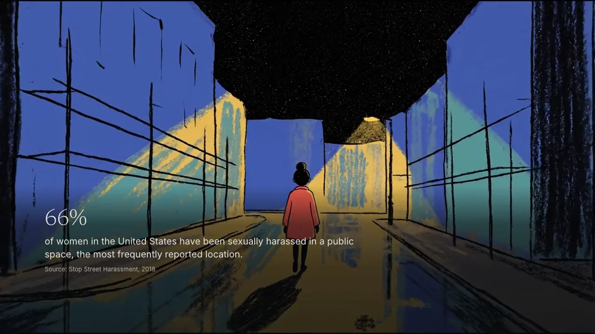
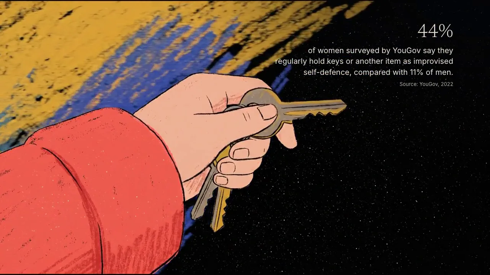
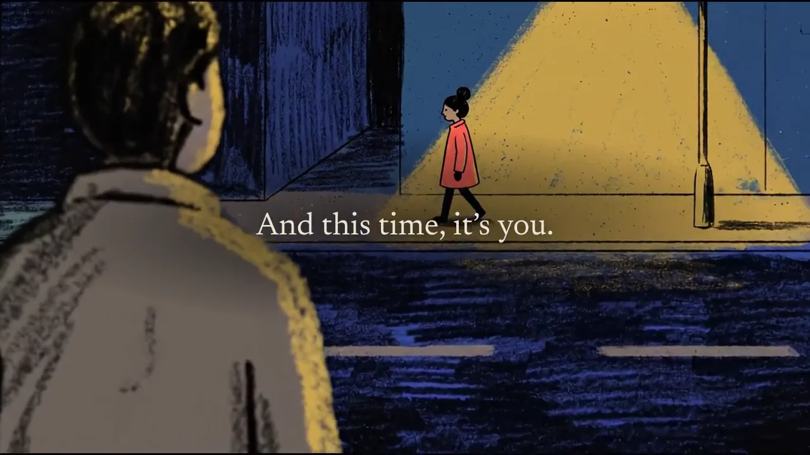

One in Three is an interactive AI simulation that puts men in a woman’s shoes to raise awareness of sexual harassment and practise stepping in as bystanders.
Esc pauses at any time.
More than 1 in 3 women in the US have been physically followed.
Stop Street Harassment, The Facts Behind the #MeToo Movement, 2018 national study. Survey of about 2,000 adults by GfK: 34% of women, 12% of men.
Women are told to hold their keys, share their location and take a self-defense class. The men who catcall, and the men who watch, are mostly left out. When men do get training, it's a consent workshop of long videos and slides that never shows how much their actions matter.
One in Three trains men to recognise harassment and to step in safely.
of people say they wouldn't know what to do if they saw it happen.
Ipsos eight-country survey for L'Oréal Paris, April 2019, reported in the L'Oréal Paris release of 2020.
An AI simulation for students and workplaces that lets men experience being in the victim's shoes, and teaches them how to safely respond as bystanders.






Still from the animated intro
Still from the animated intro
Still from the animated introLook, move, speak
Speech becomes text
Clef scores your words
A 0 to 6 ladder picks
Llama writes one line
Voice, face, subtitles
Now you are the bystander
Step 04 picks a rung on the ladder, from calm to threatening.
The ladder sets the limits. The AI only writes words.
Built for the places the problem lives: student orientations and workplace training.
Practical AI for a real problem. It reads what you say, plans his next step, and adapts.